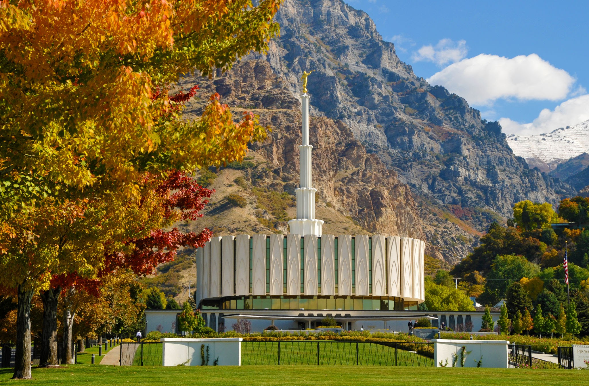
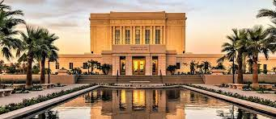

Temple Album
☰
Home
Old
New
Large
Small
Home
Nairobi, Kenya Temple
Johannesburg, South Africa Temple
Accra, Ghana Temple
Prai Cape Verder, South Africa Temple
Wahington DC Temple

Provo, Utah Temple

Mesa, Arizona Temple
Cape Town, South Africa Temple
Durban, South Africa Temple